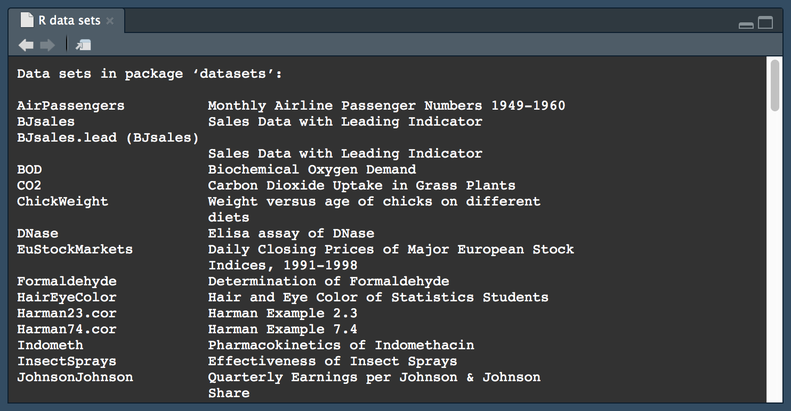

install.packages('tidyverse')
install.packages('writexl')3 Таблицы
3.1 Предварительные требования
Для работы по теме текущей лекции вам понадобятся пакеты из tidyverse, а также writexl. Установите их, используя следующую команду:
Внимание: установка пакетов выполняется один раз из консоли. Вызов функции
install.packages()не должен присутствовать в ваших скриптах
tidyverse – это не самостоятельный пакет, а набор пакетов R, которые позволяют автоматизировать решение рутинных задач по обработке данных (то, что принято называть data science). В комплект tidyverse входят следующие пакеты:
| Пакет | Назначение |
|---|---|
| tibble | Усовершенствованный вариант фрейма данных |
| dplyr | Грамматика манипуляций над табличными данными |
| tidyr | Приведение таблиц в аккуратный вид, удобный для обработки |
| readr | Чтение табличных данных из текстовых файлов |
| readxl | Чтение табличных данных из файлов Microsoft Excel |
| haven | Чтение табличных данных из файлов SPSS, Stata и SAS |
| purrr | Функциональное программирование |
| stringr | Работа со строками |
| forcats | Автоматизация работы с факторами |
| ggplot2 | Построение графиков на основе правил грамматики |
Вы можете подключать эти пакеты по одному, или сделать их все доступными в текущей сессии R, используя команду library(tidyverse). В текущей лекции мы будем подключать их по мере необходмости, чтобы акцентировать внимание на принадлежности функций к соответствующим пакетам.
Вы можете вызвать функцию из любого пакета, не подключая его целиком в текущую сессию R. Это бывает особенно полезно, когда вы редко используете функции из пакета. В этом случае вызов функции будет выглядеть как
package::function(), гдеpackage– название пакета, аfunction- название функции. Подобный синтаксис бывает особенно удобным, когда в разных пакетах имеются функции с одинаковым именем, и при вызове R использует не ту, которая нужна (по умолчанию будет использована функция из пакета, который был подключен позже).
3.2 Структуры данных
Стандартным средством представления табличных данных в R являются фреймы данных (data.frame), кратко рассмотренные в предыдущей лекции. В современных пакетах типа tidyverse используется разновидность фрейма данных, которая называется тиббл (tibble).
Создать тиббл можно напрямую, либо путем конвертации фрейма данных:
library(readxl)
library(writexl)
library(tidyverse)
library(conflicted)
tibble(
a = 1:3,
b = 1,
c = -1:1
)# A tibble: 3 × 3
a b c
<int> <dbl> <int>
1 1 1 -1
2 2 1 0
3 3 1 1dfr = data.frame(a = 1:3, b = 1, c = -1:1)
as_tibble(dfr)# A tibble: 3 × 3
a b c
<int> <dbl> <int>
1 1 1 -1
2 2 1 0
3 3 1 1Тиббл является расширением класса фрейма данных, то есть любая операция, применимая к фрейму, применима и к тибблу. Однако, тиббл поддерживает дополнительные возможности, которые оказываются очень удобны в анализе:
- При выводе в консоль тиббл печатает только те столбцы, которые помещаются на экран, и только первые 10 строк (что позволяет избежать переполнения консоли при печати больших таблиц)
- Тибблы поддерживают имена столбцов, которые недопустимы в фреймах данных (например, начинающиеся с цифры). Так называть столбцы, вообще говоря, неправильно, но это позволяет сохранить именно те названия, которые даны в исходных файлах. Например, географические таблицы часто содержат данные за разные года, и столбцы названы по этим годам.
- Тибблы поддерживают внутренние группировки данных. Установив группировку по одной или нескольким переменным, можно эффективным и компактным путем считать агрегирующие статистики по группам измерений.
- Тибблы можно создавать вручную не только по столбцам, но и по строкам.
Для реализации последней возможности можно использовать функцию tribble() (переводится как transposed tibble — транспонированный тиббл), указав имена столбцов с помощью тильды (~):
tribble(
~a, ~b, ~c,
1, 1, -1,
2, 1, 0,
3, 1, 1
)# A tibble: 3 × 3
a b c
<dbl> <dbl> <dbl>
1 1 1 -1
2 2 1 0
3 3 1 1В данной и последующих лекциях понятия мы будем использовать понятия таблица, фрейм данных и тиббл как взаимозаменяемые.
3.3 Чтение
Существует множество способов получить набор табличных данных в текущей сессии R. Эти способы варьируются от загрузки данных из пакета до извлечения таблиц из текстовых документов и веб-страниц. В настоящей главе мы рассмотрим наиболее распространенные способы, нацеленные на работу с готовыми таблицами.
3.3.1 Встроенные данные
Пакеты R часто содержат тестовые наборы данных. Эти данные, как правило, предназначены для ознакомления с возможностями пакета. Чтобы узнать, какие данные есть в пакете, вы можете вызвать функцию data(package = 'packagename'), где packagename — это имя интересующего вас пакета. Например, посмотрим, какие данные есть в пакете dplyr, который мы далее будем использовать для манипуляций с таблицами:
data(package = 'dplyr')
На рисунке можно видеть перечень наборов данных и их краткие описания. Для загрузки набора данных передайте его название в качестве первого параметра функции data(). Ну-ка, что там с персонажами из Star Wars:
data(starwars, package = 'dplyr')
starwars# A tibble: 87 × 14
name height mass hair_color skin_color eye_color birth_year sex gender
<chr> <int> <dbl> <chr> <chr> <chr> <dbl> <chr> <chr>
1 Luke Sk… 172 77 blond fair blue 19 male mascu…
2 C-3PO 167 75 <NA> gold yellow 112 none mascu…
3 R2-D2 96 32 <NA> white, bl… red 33 none mascu…
4 Darth V… 202 136 none white yellow 41.9 male mascu…
5 Leia Or… 150 49 brown light brown 19 fema… femin…
6 Owen La… 178 120 brown, gr… light blue 52 male mascu…
7 Beru Wh… 165 75 brown light blue 47 fema… femin…
8 R5-D4 97 32 <NA> white, red red NA none mascu…
9 Biggs D… 183 84 black light brown 24 male mascu…
10 Obi-Wan… 182 77 auburn, w… fair blue-gray 57 male mascu…
# ℹ 77 more rows
# ℹ 5 more variables: homeworld <chr>, species <chr>, films <list>,
# vehicles <list>, starships <list>Обратите внимание, что после подключения набора данных он становится доступным в текущей сесси R именно с тем именем, с которым он сохранен в пакете
Если вызвать функцию data() без параметров, будет выведен список данных со всех пакетов, которые подключены в текущей сессии R:
data()
По умолчанию в RStudio всегда подключен пакет datasets, который устанавливается вместе с базовым дистрибутивом R. Если пакет подключен в текущую сессию, то можно получить набор данных по его имени, не указывая название пакета. Например, в пакете datasets есть набор данных quakes о землетрясениях на о. Фиджи:
data(quakes)
head(quakes) # просмотрим макушку таблицы lat long depth mag stations
1 -20.42 181.62 562 4.8 41
2 -20.62 181.03 650 4.2 15
3 -26.00 184.10 42 5.4 43
4 -17.97 181.66 626 4.1 19
5 -20.42 181.96 649 4.0 11
6 -19.68 184.31 195 4.0 12Таким образом, если вы используйете пакет dplyr в своей программе, данные о героях Звездных Войн можно загрузить не указывая пакет, т.к. он был ранее подключен через функцию library():
data(starwars)3.3.2 Текстовые таблицы
Текстовые таблицы бывают, как правило, двух типов: с разделителем (CSV) и с фиксированной шириной столбца.
3.3.2.1 Файлы с разделителем
CSV (Comma-separated value) — общее название для формата представления таблиц в виде текстовых файлов, организованных по следующему принципу:
- Каждая строка в файле соответствует строке в таблице.
- Ячейки отделяются друг от друга символом-разделителем.
- Если ячейка пустая, то между соседними разделителями не должно быть никаких символов.
Стандартным разделителем ячеек является запятая (,), а десятичным разделителем — точка (.). Однако это не является строгим правилом. Например, в ряде локалей (например, русской) запятая используется в качестве десятичного разделителя, поэтому колонки часто разделяют точкой с запятой (;).
Формат CSV никак не оговаривает наличие заголовочной строки с названиями столбцов в начале файла — она может как отсутствовать, так и присутствовать. Поэтому при чтении таблиц из файлов необходимо информировать программу о наличии заголовка путем указания соответствующего параметра.
Любая функция, используемая вами для чтения файлов, вне зависимости от пакета, который вы используете, как правило, содержит параметры, с помощью которых можно задать символы, отвечающие за десятичный разделитель и разделитель столбцов, а также наличие или отсутствие строки-заголовка и кодировку файла. Если таблица читается некорректно, ознакомьтесь со справкой к функции и при необходимости замените стандартные значения этих параметров на те, что соответствуют формату вашей таблицы.
Например, вот так выглядит текстовая таблица в формате CSV с данными по численности населения в Федеральных округах Российской Федерации за 2005 и 2010-2013 гг. (по данным Росстата):
N,Region,Year05,Year10,Year11,Year12,Year13
1,Центральный,4341,3761,3613,3651,3570
2,Северо-Западный,3192,3088,2866,2877,2796
3,Южный федеральный,1409,1446,1436,1394,1321
4,Северо-Кавказский,496,390,397,395,374
5,Приволжский,3162,2883,2857,2854,2849
6,Уральский,1681,1860,1834,1665,1624
7,Сибирский,2575,2218,2142,2077,1941
8,Дальневосточный,871,870,821,765,713Таблицы в формате CSV можно прочесть как с помощью стандартных средств языка R, так и с помощью пакета readr, который входит в набор пакетов tidyverse. Мы будем использовать последние, а стандартные средства языка оставим на самостоятельное изучение.
Для чтения таблиц с разделителем в readr имеется несколько функций:
read_csv()читает файлы с разделителем запятойread_csv2()читайт файоы с разделителем точкой-с-запятой (может быть особенно актуально для русских файлов)read_tsv()читает файлы с разделителем табуляцией или пробеломread_delim()читает файлы с произвольным разделителем (указывается в качестве параметра)
Вышеуказанный файл сохранен с разделителем запятой, поэтому мы можем прочесть его посредством первой функции из списка:
(okruga = read_csv('data/okruga.csv'))# A tibble: 8 × 7
`№` Регион `2005` `2010` `2011` `2012` `2013`
<dbl> <chr> <dbl> <dbl> <dbl> <dbl> <dbl>
1 1 Центральный 4341 3761 3613 3651 3570
2 2 Северо-Западный 3192 3088 2866 2877 2796
3 3 Южный федеральный 1409 1446 1436 1394 1321
4 4 Северо-Кавказский 496 390 397 395 374
5 5 Приволжский 3162 2883 2857 2854 2849
6 6 Уральский 1681 1860 1834 1665 1624
7 7 Сибирский 2575 2218 2142 2077 1941
8 8 Дальневосточный 871 870 821 765 713Как видно, функции пакета readr выдают диагностическую информацию о том, к какому типу были приведены столбцы таблицы при чтении. Помимо этого, первая строка была использована в качестве заголовочной.
3.3.2.2 Файлы с фиксированной шириной столбца
В файлах с фиксированной шириной на каждый столбец резервируется определенное количество символов. При этом данные выравниваются по правому краю, а короткие строки отбиваются слева пробелами. Такой формат часто используется в численных моделях (например, метеорологических) для представления входных данных или результатов расчетов. Например, файл ниже содержит данные об энергии ветра (\(Вт/м^2\)) на высотах 50 и 110 м по точкам вдоль побережья Черного моря:
1 43.500000 28.000000 111.05298 178.41447
2 43.500000 28.500000 187.38620 301.05331
3 44.000000 28.500000 168.82031 271.22421
4 44.500000 28.500000 157.22586 252.59746
5 44.500000 29.000000 189.46452 304.39597
6 45.000000 29.000000 170.40709 273.77536
7 45.000000 29.500000 198.92389 319.58777
8 45.500000 29.500000 188.64406 303.07242
9 46.000000 30.000000 180.10541 289.35379
10 46.000000 30.500000 207.91818 334.03564Для чтения таких файлов в readr есть функции:
read_fwf()читает файлы с фиксированной шириной столбца, позволяя задавать ширины столбцов (черезfwf_widths()) или начальные позиции каждого столбца (черезfwf_positions())read_table()читает наиболее распространенный вариант файла с фиксированной шириной столбца, в котором колонки разделены пробелами. Позиции столбцов определяются автоматически, что очень удобно.
Прочитаем вышеприведенный файл с данными о ветровой энергии:
(wenergy = read_table('data/wind_energy.txt', col_names = c('id', 'lat', 'lon', 'energy50', 'energy110')))# A tibble: 92 × 5
id lat lon energy50 energy110
<dbl> <dbl> <dbl> <dbl> <dbl>
1 1 43.5 28 111. 178.
2 2 43.5 28.5 187. 301.
3 3 44 28.5 169. 271.
4 4 44.5 28.5 157. 253.
5 5 44.5 29 189. 304.
6 6 45 29 170. 274.
7 7 45 29.5 199. 320.
8 8 45.5 29.5 189. 303.
9 9 46 30 180. 289.
10 10 46 30.5 208. 334.
# ℹ 82 more rows3.3.3 Таблицы Microsoft Excel
Для чтения таблиц Microsoft Excel, так же как и для текcтовых файлов, существуют множество пакетов, таких как xlsx, openxlsx и readxl.
D настоящем курсе мы будем пользоваться пакетом readxl, поскольку он не имеет внешних зависимостей, а его функции концептуально идентичны функциям пакета readr. Прочтем данные о лесовосстановлении (в тысяч га), полученные из регионального ежегодника Росстата за 2017 год. Эта таблица содержит колонку с названием субъекта и еще 8 колонок с данными по годам. Поскольку в таблице есть пропущенные значения, необходимо определить типы столбцов (в противном случае они могут быть определены как текстовые):
(reforest = read_excel('data/reforest.xlsx',
col_types = c('text', rep('numeric', 8))))# A tibble: 89 × 9
Region `2005` `2010` `2011` `2012` `2013` `2014` `2015` `2016`
<chr> <dbl> <dbl> <dbl> <dbl> <dbl> <dbl> <dbl> <dbl>
1 Российская Федерация 812. 812. 860 842. 872. 863 803. 840.
2 Центральный федераль… 52.6 62.7 60.9 60.3 70.9 71.2 72.6 77
3 Белгородская область 0.4 0.1 0.3 0.3 0.4 0.4 0.2 0.2
4 Брянская область 2.9 2.8 3 3.2 3.5 3.3 3.1 3
5 Владимирская область 4.4 5.3 5.7 6 7.1 5.9 6 4.9
6 Воронежская область 1.1 1.1 1.8 3 2.7 2.7 2.6 2.3
7 Ивановская область 2.1 1.6 2.2 3.1 4 4.8 4.6 4.2
8 Калужская область 2.2 2.3 2.3 2.5 2.4 3.1 3.2 3.2
9 Костромская область 10 25.2 11 11.8 15.3 13.6 15.1 16.4
10 Курская область 0.5 0.3 0.4 0.6 0.6 0.6 0.5 0.4
# ℹ 79 more rows3.3.4 Параметры
Функции пакетов readr и readxl имеют идентичный набор параметров, позволяющих управлять процедурой чтения данных (многоточие используется вместо перечисления параметров):
skip = nпозволяет пропустить первые n строк таблицы (например, если в них содержатся какие-то комментарии)col_names = FALSEпозволяет не интерпретировать первую строку как заголовочную (вместо этого она будет читаться как строка с данными)col_names = c(...)позволяет задать имена столбцов (удобно, если в файле они длинные)col_types = cols(...)позволяет задать типы столбцов (необходимо, если функция неправильно определяет их сама)na = '-'позволяет указать символ, который используется для указания пропущенных значений (в данном случае указан прочерк-дефис)locale = locale(...)управляет локалью (в том числе позволяет указать кодировку файла)
Стандартной кодировкой для представления текста в UNIX-подобных системах (Ubuntu, macOS и т.д.) является UTF-8 (Unicode), в русскоязычных версиях Windows — CP1251 (Windows-1251). Текстовый файл CSV, созданный в разных операционных системах, будет по умолчанию сохраняться в соответствующей кодировке, если вы не указали ее явным образом. Если при загрузке таблицы в R вы видите вместо текста нечитаемые символы — кракозябры — то, скорее всего, вы читаете файл не в той кодировке, в которой он был сохранен. Если вы не знаете, что такое кодировка и Юникод, то вам сюда
По умолчанию файлы читаются в той кодировке, которая соответствует операционной системе, на которой запущен R. Если файл создан в другой кодировке, придется указать ее при чтении. Например, вы пользуетесь macOS (UTF-8), а ваш коллега — Windows (CP1251), то для чтения созданного им файла вам, скорее всего, понадобится указать что-то вроде locale = locale(encoding = 'CP1251')
3.4 Просмотр
Для просмотра фрейма данных в консоли RStudio вы можете использовать несколько опций. Пусть наш фрейм данных называется reforest. Тогда:
print(reforest)— выводит фрейм в консоль целиком (можно написать простоtabв консоли).head(reforest, n)— отбирает первые \(n\) строк фреймаtail(reforest, n)— отбирает последние \(n\) строк фрейма
По умолчанию для функций head() и tail() \(n=6\). Обычно этот параметр опускают, поскольку нужно просмотреть только первые несколько строк и шести вполне достаточно. Если вы напечатаете в консоли head(reforest) или tail(reforest), то для выбранных строк будет вызвана функция print(), аналогично выводу всего фрейма:
# ПРОСМОТР ТАБЛИЦЫ
print(reforest)
## # A tibble: 89 × 9
## Region `2005` `2010` `2011` `2012` `2013` `2014` `2015` `2016`
## <chr> <dbl> <dbl> <dbl> <dbl> <dbl> <dbl> <dbl> <dbl>
## 1 Российская Федерация 812. 812. 860 842. 872. 863 803. 840.
## 2 Центральный федераль… 52.6 62.7 60.9 60.3 70.9 71.2 72.6 77
## 3 Белгородская область 0.4 0.1 0.3 0.3 0.4 0.4 0.2 0.2
## 4 Брянская область 2.9 2.8 3 3.2 3.5 3.3 3.1 3
## 5 Владимирская область 4.4 5.3 5.7 6 7.1 5.9 6 4.9
## 6 Воронежская область 1.1 1.1 1.8 3 2.7 2.7 2.6 2.3
## 7 Ивановская область 2.1 1.6 2.2 3.1 4 4.8 4.6 4.2
## 8 Калужская область 2.2 2.3 2.3 2.5 2.4 3.1 3.2 3.2
## 9 Костромская область 10 25.2 11 11.8 15.3 13.6 15.1 16.4
## 10 Курская область 0.5 0.3 0.4 0.6 0.6 0.6 0.5 0.4
## # ℹ 79 more rows
head(reforest)
## # A tibble: 6 × 9
## Region `2005` `2010` `2011` `2012` `2013` `2014` `2015` `2016`
## <chr> <dbl> <dbl> <dbl> <dbl> <dbl> <dbl> <dbl> <dbl>
## 1 Российская Федерация 812. 812. 860 842. 872. 863 803. 840.
## 2 Центральный федеральн… 52.6 62.7 60.9 60.3 70.9 71.2 72.6 77
## 3 Белгородская область 0.4 0.1 0.3 0.3 0.4 0.4 0.2 0.2
## 4 Брянская область 2.9 2.8 3 3.2 3.5 3.3 3.1 3
## 5 Владимирская область 4.4 5.3 5.7 6 7.1 5.9 6 4.9
## 6 Воронежская область 1.1 1.1 1.8 3 2.7 2.7 2.6 2.3
tail(reforest)
## # A tibble: 6 × 9
## Region `2005` `2010` `2011` `2012` `2013` `2014` `2015` `2016`
## <chr> <dbl> <dbl> <dbl> <dbl> <dbl> <dbl> <dbl> <dbl>
## 1 Хабаровский край 107. 70.2 68.7 67.2 58.4 50.5 59.6 60.3
## 2 Амурская область 33.3 29.8 32.2 33.6 35.5 37.7 28.5 27.7
## 3 Магаданская область 2.7 2.6 2.6 2.8 3 2.5 0.4 NA
## 4 Сахалинская область 13.1 12.7 12.5 4.6 4.7 4.9 4.7 4.1
## 5 Еврейская автономная … 2.9 NA 2.6 2.5 2.3 NA NA 2.4
## 6 Чукотский автономный … 0.3 NA NA NA NA NA NA NARStudio предоставляет графический интерфейс для просмотра таблиц, в котором таблицу можно сортировать и фильтровать. Чтобы его активировать, надо вызвать функцию View():
View(tab)Поскольку функции head() и tail() возвращают строки с хвоста или начала фрейма данных, их можно и подать на вход функции View():
View(head(reforest, 3))Как правило, не следует оставлять вызовы функции
View()в тексте законченной программы. Это приведет к тому, что при запуске будут открываться новые вкладки с просмотром таблиц, что может раздражать пользователя (в том числе и вас самих). ИспользуйтеView()для вывода окончательного результата в конце программы или при отладке программы. Все вызовыView()в программе можно легко закомментировать или раскомментировать, выполнив поиск с заменой'View('на'# View('и наоборот.
3.5 Столбцы, строки и ячейки
3.5.1 Названия
Столбцы, строки и ячейк представляют собой основные структурные элементы фрейма данных или тиббла. Перед тем как мы поднимемся на уровень выше и рассмотрим обобщенные операции преобразования таблиц, необходимо посмотреть, как извлекать структурные элементы таблиц.
Столбцы и строки таблицы имеют названия, которые можно читать и записывать с помощью функций colnames() и rownames():
# Чтение названий столбцов и строк
colnames(okruga)[1] "№" "Регион" "2005" "2010" "2011" "2012" "2013" rownames(okruga)[1] "1" "2" "3" "4" "5" "6" "7" "8"# Замена названий столбцов и строк
colnames(okruga) <- c("N", "Region", "Year05", "Year10", "Year11", "Year12", "Year13")
print(okruga)# A tibble: 8 × 7
N Region Year05 Year10 Year11 Year12 Year13
<dbl> <chr> <dbl> <dbl> <dbl> <dbl> <dbl>
1 1 Центральный 4341 3761 3613 3651 3570
2 2 Северо-Западный 3192 3088 2866 2877 2796
3 3 Южный федеральный 1409 1446 1436 1394 1321
4 4 Северо-Кавказский 496 390 397 395 374
5 5 Приволжский 3162 2883 2857 2854 2849
6 6 Уральский 1681 1860 1834 1665 1624
7 7 Сибирский 2575 2218 2142 2077 1941
8 8 Дальневосточный 871 870 821 765 713Названия строк редко заменяются, поскольку с точки зрения реляционной алгебры большого смысла они не имеют.
3.5.2 Обращение к столбцам
К столбцу можно обращаться по номеру и названию (с помощью оператора $ или в кавычках внутри скобок). Если вы указываете в квадратных скобках номер без запятой, он трактуется именно как номер столбца, а не строки. Тип возвращаемого значения зависит от синтаксиса:
- обращение через
$возвращает вектор; - обращение в скобках с запятой к одному столбцу возвращает вектор;
- обращение в скобках с запятой к нескольким столбцам возвращает фрейм данных;
- обращение в скобках без запятой возвращает фрейм данных.
Несколько примеров:
# Один столбец - результат зависит от запятой
okruga$Year05 # столбец в виде вектора
okruga[, "Year05"] # столбец в виде вектора
okruga[, 2] # столбец в виде вектора
okruga["Year05"] # столбец в виде фрейма данных/тиббла
okruga[2] # столбец в виде фрейма данных/тиббла
# Несколько столбцов - всегда фрейм данных/тиббл
okruga[, c(1, 4)]
okruga[, c("Region", "Year11")]
okruga[c("Region", "Year11")]
okruga[c(1, 4)]3.5.3 Обращение к строкам
Обращаться к строкам можно по их номерам. В этом случае в качестве индекса можно передать номер (номера) интересующих строк, либо вектор логических значений, в котором интересующие строки помечены как TRUE, а остальные — FALSE (в этом случае длина вектора должна равняться количеству строк в таблице):
okruga[5, ] # Одна строка
okruga[2:4, ] # Несколько строк
okruga[okruga$Year10 > 2000, ] # Несколько строк через TRUE/FALSEВ отличие от работы со столбцами, выбор строк всегда возвращает таблицу (фрейм или тиббл).
3.5.4 Обращение к ячейкам
Чтобы выбрать конкретные ячейки в таблице, необходимо задать оба измерения:
okruga[2:3, c("Year11", "Year12")]# A tibble: 2 × 2
Year11 Year12
<dbl> <dbl>
1 2866 2877
2 1436 1394Обратите внимание на то, что при этом возвращаются все комбинации строк и столбцов. То есть, нельзя выбрать ячейки 2,"Year11" и 3,"Year2" — вместе с ними также будут выбраны ячейки 3,"Year11" и 2,"Year2". Впрочем, подобные задачи возникают довольно редко
3.6 Преобразования
3.6.1 Грамматика манипуляций
Если проанализировать наиболее типичные манипуляции, которые осуществляются над таблицами, то их окажется совсем немного. К таким манипуляциям относятся выбор переменных, фильтрация строк, сортировка, вычисление новых столбцов, агрегирующие статистики и группировка.
Все эти задачи можно решать стандартными средствами R (и мы увидим, как это делается). Однако некоторые из них достаточно громоздки в реализации (например, группировка). К счастью, экосистема R предлагает готовые средства, позволяющие справляться с подобными задачами простым и элегантным путем. Эти средства предоставляет пакет dplyr (произносится как deep liar — ‘диплáйер’), входящий в набор инструментов tidyverse.
В основе конецепции dplyr лежит понятие о грамматике табличных манипуляций, которая включает в себя ограниченное число наиболее используемых операций, а также ряд вспомогательных функций.
Основные функции пакета dplyr представлены в таблице ниже:
| Функция | Назначение |
|---|---|
select() |
Выбор переменных по их названиям |
dplyr::filter() |
Выбор строк по заданному критерию (запросу) |
arrange() |
Упорядочение по указанным переменным |
mutate() |
Вычисление новых переменных (мутирование) |
summarise() |
Агрегирование значений переменных |
group_by() |
Группировка строк (для последующего агрегирования) |
Как можно видеть, этих функций совсем немного. Дополнительно к ним пакет dplyr содержит еще множество вспомогательных функций, которые применяются при выполнении основных манипуляций.
Рассмотрим применение этих функций на примере работы с таблицей по восстановлению лесного фонда в регионах России. Для начала переименуем столбцы с годами, чтобы их названия начинались с буквы y:
old_names = colnames(reforest)
colnames(reforest) = c(old_names[1], paste('y', old_names[2:9], sep = ''))Начнем с выбора нужных переменных, используя select(). Оставим только название региона и данные за 2010 и 2015 гг:
(rdf = select(reforest, Region, y2010, y2015))# A tibble: 89 × 3
Region y2010 y2015
<chr> <dbl> <dbl>
1 Российская Федерация 812. 803.
2 Центральный федеральный округ 62.7 72.6
3 Белгородская область 0.1 0.2
4 Брянская область 2.8 3.1
5 Владимирская область 5.3 6
6 Воронежская область 1.1 2.6
7 Ивановская область 1.6 4.6
8 Калужская область 2.3 3.2
9 Костромская область 25.2 15.1
10 Курская область 0.3 0.5
# ℹ 79 more rowsТу же самую задачу можно решить от противного — указать со знаком - те столбцы, которые надо убрать:
(rdf = select(reforest, -y2005, -y2011:-y2014, -y2016))# A tibble: 89 × 3
Region y2010 y2015
<chr> <dbl> <dbl>
1 Российская Федерация 812. 803.
2 Центральный федеральный округ 62.7 72.6
3 Белгородская область 0.1 0.2
4 Брянская область 2.8 3.1
5 Владимирская область 5.3 6
6 Воронежская область 1.1 2.6
7 Ивановская область 1.6 4.6
8 Калужская область 2.3 3.2
9 Костромская область 25.2 15.1
10 Курская область 0.3 0.5
# ℹ 79 more rowsОбратите внимание на то, что можно указывать еще и диапазоны названий столбцов, если они идут друг за другом.
Названия столбцов в функциях dplyr указываются без кавычек, что позволяет сделат код проще и читаемее. Этот прием называется квотацией, с ним мы познакомимся подробнее в следующей лекции.
Чтобы осуществить фильтрацию, необходимо задать условие, накладываемое на строки. Текущая таблица содержит данные по субъектам, федеральным округам и России в целом. Поскольку данные по округам и стране являются избыточными (их можно получить путем агрегирования данных по субъектам), выполним фильтрацию таблицы, убрав строки, в которых содержатся слова Федерация и федеральный округ. Для этого используем функцию str_detect() из пакета stringr, который также входит в tidyverse:
flt = !stringr::str_detect(rdf$Region, 'Федерация|федеральный округ') # готовим фильтр для строк
(regdf = dplyr::filter(rdf, flt)) # применяем фильтр# A tibble: 80 × 3
Region y2010 y2015
<chr> <dbl> <dbl>
1 Белгородская область 0.1 0.2
2 Брянская область 2.8 3.1
3 Владимирская область 5.3 6
4 Воронежская область 1.1 2.6
5 Ивановская область 1.6 4.6
6 Калужская область 2.3 3.2
7 Костромская область 25.2 15.1
8 Курская область 0.3 0.5
9 Липецкая область 0.4 1.1
10 Московская область 2.7 8.9
# ℹ 70 more rowsУсловие можно прописать непосредственно при вызове dplyr::filter(). Например, выберем регионы, в которых объем лесовосстановительных работ в 2015 году был более 50 тыс. га:
dplyr::filter(regdf, y2015 > 50)# A tibble: 4 × 3
Region y2010 y2015
<chr> <dbl> <dbl>
1 Архангельская область 39.4 57.6
2 Красноярский край 49 50.4
3 Иркутская область 80.4 117.
4 Хабаровский край 70.2 59.6Для сортировки таблицы посредством arrange() необходимо указать столбцы, по которым будет осуществлено упорядочение строк. Чаще всего это один столбец, например y2015:
arrange(regdf, y2015) # по возрастанию# A tibble: 80 × 3
Region y2010 y2015
<chr> <dbl> <dbl>
1 Орловская область 0 0.1
2 Астраханская область 0.1 0.1
3 Кабардино-Балкарская Республика 0.1 0.1
4 Карачаево-Черкесская Республика 0.2 0.1
5 Республика Северная Осетия – Алания NA 0.1
6 Ставропольский край 0.4 0.1
7 Белгородская область 0.1 0.2
8 Тульская область 0.1 0.2
9 Магаданская область 2.6 0.4
10 Курская область 0.3 0.5
# ℹ 70 more rowsarrange(regdf, desc(y2015)) # по убыванию# A tibble: 80 × 3
Region y2010 y2015
<chr> <dbl> <dbl>
1 Иркутская область 80.4 117.
2 Хабаровский край 70.2 59.6
3 Архангельская область 39.4 57.6
4 Красноярский край 49 50.4
5 Вологодская область 32.3 49
6 Республика Коми 33.3 36.7
7 Пермский край 22.9 32.5
8 Кировская область 26 31.1
9 Амурская область 29.8 28.5
10 Томская область 9.3 25.6
# ℹ 70 more rowsДобавление новых переменных (столбцов) осуществляется посредством mutate(). Например, определим, как изменился объем лесовосстановительных работ в 2015 году по сравнению с 2010 годом:
(regdf = mutate(regdf, delta = y2015 - y2010))# A tibble: 80 × 4
Region y2010 y2015 delta
<chr> <dbl> <dbl> <dbl>
1 Белгородская область 0.1 0.2 0.1
2 Брянская область 2.8 3.1 0.300
3 Владимирская область 5.3 6 0.7
4 Воронежская область 1.1 2.6 1.5
5 Ивановская область 1.6 4.6 3
6 Калужская область 2.3 3.2 0.9
7 Костромская область 25.2 15.1 -10.1
8 Курская область 0.3 0.5 0.2
9 Липецкая область 0.4 1.1 0.7
10 Московская область 2.7 8.9 6.2
# ℹ 70 more rowsСуществует редко используемая разновидность мутирования, при которой сохраняются только столбцы, указанные в параметрах. Она называется transmute() — по сути это комбинация mutate() и select(). Если вы хотите просто сохранить какой-то из столбцов, то укажите его через оператор равенства:
transmute(regdf, Region = Region, delta = y2015 - y2010) # сохраняем только Region и delta# A tibble: 80 × 2
Region delta
<chr> <dbl>
1 Белгородская область 0.1
2 Брянская область 0.300
3 Владимирская область 0.7
4 Воронежская область 1.5
5 Ивановская область 3
6 Калужская область 0.9
7 Костромская область -10.1
8 Курская область 0.2
9 Липецкая область 0.7
10 Московская область 6.2
# ℹ 70 more rowsВы можете выполнять агрегирование данных и вычислять суммы, средние значения и т.д. используя summarise(). После того как мы избавились от избыточных данных в таблице, мы всегда можем получить их через агрегирование. Например, посчитаем суммарный, минимальный и максимальный объем лесовосстановительных работ по всей стране:
summarise(regdf,
sumforest = sum(y2015, na.rm = TRUE),
minforest = min(y2015, na.rm = TRUE),
maxforest = max(y2015, na.rm = TRUE))# A tibble: 1 × 3
sumforest minforest maxforest
<dbl> <dbl> <dbl>
1 801. 0.1 117.Как правило, summarise() используется в паре с агрегирующими функциями, которые берут вектор значений и возвращают одно значение. К таким функциям относятся стандартные операции типа min(), max(), mean(), sum() и т.д. В пакете dplyr также имеются полезные агрегирующие функции:
n()вычисляет количество элементов.n_distinct()вычисляет количество уникальных элементов.first(x),last(x)иnth(x, n)извлекают, соответственно, первый, последний и n-ный элемент (они бывают особенно удобны, если вы сортируете строки по какому-то критерию).
Достаточно часто данные надо агрегировать не по всей таблице, а по группам измерений. В этом случае сначала делается группировка, затем агрегирование данных в каждой группе. Предположим, что нам нужно найти регион с наибольшим объемом лесовосставновительных работ в каждом Федеральном округе. Для этого нам потребуется:
- Дополнить каждую строку региона информацией о принадлежности к федеральному округу
- Сгруппировать субъекты по федеральным округам — Отсортировать каждую группу по убыванию значения поля
- Взять первую строку в каждой группе
- Объединить строки в одну таблицу
Для начала вернемся на этап, когда мы избавлялись от федеральных округов в таблице. Поскольку в исходной таблице данные были упорядочены по округам, эту информацию можно использовать для создания нового столбца с названием округа каждого субъекта. В этом нам поможет функция fill() из пакета tidyr:
flt2 = stringr::str_detect(rdf$Region, 'федеральный округ') # ищем округа
(rdf2 = mutate(rdf, okrug = if_else(flt2, Region, NA))) # перенесем названия округов в новый столбец# A tibble: 89 × 4
Region y2010 y2015 okrug
<chr> <dbl> <dbl> <chr>
1 Российская Федерация 812. 803. <NA>
2 Центральный федеральный округ 62.7 72.6 Центральный федеральный округ
3 Белгородская область 0.1 0.2 <NA>
4 Брянская область 2.8 3.1 <NA>
5 Владимирская область 5.3 6 <NA>
6 Воронежская область 1.1 2.6 <NA>
7 Ивановская область 1.6 4.6 <NA>
8 Калужская область 2.3 3.2 <NA>
9 Костромская область 25.2 15.1 <NA>
10 Курская область 0.3 0.5 <NA>
# ℹ 79 more rows(rdf2 = tidyr::fill(rdf2, okrug)) # заполним все пустые строчки предыдущим значением# A tibble: 89 × 4
Region y2010 y2015 okrug
<chr> <dbl> <dbl> <chr>
1 Российская Федерация 812. 803. <NA>
2 Центральный федеральный округ 62.7 72.6 Центральный федеральный округ
3 Белгородская область 0.1 0.2 Центральный федеральный округ
4 Брянская область 2.8 3.1 Центральный федеральный округ
5 Владимирская область 5.3 6 Центральный федеральный округ
6 Воронежская область 1.1 2.6 Центральный федеральный округ
7 Ивановская область 1.6 4.6 Центральный федеральный округ
8 Калужская область 2.3 3.2 Центральный федеральный округ
9 Костромская область 25.2 15.1 Центральный федеральный округ
10 Курская область 0.3 0.5 Центральный федеральный округ
# ℹ 79 more rows(regdf = dplyr::filter(rdf2, flt)) # оставим только регионы# A tibble: 80 × 4
Region y2010 y2015 okrug
<chr> <dbl> <dbl> <chr>
1 Белгородская область 0.1 0.2 Центральный федеральный округ
2 Брянская область 2.8 3.1 Центральный федеральный округ
3 Владимирская область 5.3 6 Центральный федеральный округ
4 Воронежская область 1.1 2.6 Центральный федеральный округ
5 Ивановская область 1.6 4.6 Центральный федеральный округ
6 Калужская область 2.3 3.2 Центральный федеральный округ
7 Костромская область 25.2 15.1 Центральный федеральный округ
8 Курская область 0.3 0.5 Центральный федеральный округ
9 Липецкая область 0.4 1.1 Центральный федеральный округ
10 Московская область 2.7 8.9 Центральный федеральный округ
# ℹ 70 more rowsТеперь мы можем определить регион с максимальным объемом лесовосстановительных работ в каждом Федеральном округе, используя вспомогательную функцию row_number() которая возвращает номер для каждой строки таблицы:
regdf_gr = group_by(regdf, okrug)
regdf_arr = arrange(regdf_gr, desc(y2015))
(regdf_res = dplyr::filter(regdf_arr, row_number() == 1))# A tibble: 8 × 4
# Groups: okrug [8]
Region y2010 y2015 okrug
<chr> <dbl> <dbl> <chr>
1 Иркутская область 80.4 117. Сибирский федеральный округ
2 Хабаровский край 70.2 59.6 Дальневосточный федеральный округ
3 Архангельская область 39.4 57.6 Северо-Западный федеральный округ
4 Пермский край 22.9 32.5 Приволжский федеральный округ
5 Свердловская область 25.6 24.4 Уральский федеральный округ
6 Костромская область 25.2 15.1 Центральный федеральный округ
7 Волгоградская область 1.8 0.9 Южный федеральный округ
8 Чеченская Республика 0.9 0.7 Северо-Кавказский федеральный округgroup_by() часто используется в паре с summarise(). Например мы можем получить суммарный объем лесовосстановительных работ по каждому федеральному округу:
regdf_gr = group_by(regdf, okrug)
summarise(regdf_gr, total = sum(y2015, na.rm = TRUE))# A tibble: 8 × 2
okrug total
<chr> <dbl>
1 Дальневосточный федеральный округ 108.
2 Приволжский федеральный округ 110.
3 Северо-Западный федеральный округ 194.
4 Северо-Кавказский федеральный округ 1.1
5 Сибирский федеральный округ 259.
6 Уральский федеральный округ 52.9
7 Центральный федеральный округ 72.7
8 Южный федеральный округ 3.3Использование dplyr целым обладает рядом преимуществ по сравнению с применением стандартных средств R:
- вызов функций с говорящими названиями операции более понятными;
- код выглядит более чистым и легко читаемым за счет отсутствия обращений к фреймам данных через квадратные скобки, доллары и «закавыченные» названия переменных;
- код с использованием функций dplyr часто оказывается короче, чем его традиционные аналоги;
- операции dplyr можно выстраивать в конвейеры с помощью пайп-оператора
|>.
Последнюю возможность мы рассмотрим в следующем параграфе.
3.6.2 Конвейер манипуляций
В предыдущем параграфе было показано как найти регион-лидер в каждой группе по выбранному показателю. При этом, несмотря на то что интерес представляет только конечный результат, нам пришлось шесть раз осуществить запись промежуточного результата в соответствующую переменную. Чтобы избежать подобного многословия в программах, в R реализована возможность организации конвейера манипуляций (pipeline) посредством использования пайп-оператора |>.
Пайп-оператор |> предназначен для компактной и наглядной записи последовательностей обработки данных. Работает он следующим образом:
x |> fэквивалентноf(x)x |> f(y)эквивалентноf(x, y)x |> f |> g |> hэквивалентноh(g(f(x)))
Коротко говоря, пайп оператор берет результат вычисления выражения слева и подставляет его в качестве первого аргумента в выражение справа. С помощью этого оператора вышеприведенный код по нахождению региона-лидера можно записать так:
regdf = rdf |>
mutate(okrug = if_else(flt2, Region, NA)) |>
tidyr::fill(okrug) |>
dplyr::filter(flt)
leaders = regdf |>
group_by(okrug) |>
arrange(desc(y2015)) |>
dplyr::filter(row_number() == 1)
print(leaders)
## # A tibble: 8 × 4
## # Groups: okrug [8]
## Region y2010 y2015 okrug
## <chr> <dbl> <dbl> <chr>
## 1 Иркутская область 80.4 117. Сибирский федеральный округ
## 2 Хабаровский край 70.2 59.6 Дальневосточный федеральный округ
## 3 Архангельская область 39.4 57.6 Северо-Западный федеральный округ
## 4 Пермский край 22.9 32.5 Приволжский федеральный округ
## 5 Свердловская область 25.6 24.4 Уральский федеральный округ
## 6 Костромская область 25.2 15.1 Центральный федеральный округ
## 7 Волгоградская область 1.8 0.9 Южный федеральный округ
## 8 Чеченская Республика 0.9 0.7 Северо-Кавказский федеральный округЕсли бы мы попытались написать те же последовательности операций одним выражением в традиционной «матрешечной» парадигме, это выглядело так:
regdf = dplyr::filter(
tidyr::fill(
mutate(
rdf,
okrug = if_else(flt2, Region, NA)
),
okrug
),
flt
)
result = dplyr::filter(
arrange(
group_by(
regdf,
okrug
),
desc(y2015)
),
row_number() == 1
)Выглядит несколько устрашающе. К тому же, читать такой код приходится задом наперед (изнутри наружу), чтобы понять последовательность действий. Таким образом, организация конвейера манипуляций с использованием пайп-оператора позволяет:
- упорядочить операции по обработке данных слева направо (в противоположность направлению изнутри наружу);
- избежать вложенных вызовов функций (матрёшки);
- минимизировать количество переменных для храненния промежуточных результатов;
- упростить добавление новых операций по обработке данных в любое место последовательности.
Пайп-оператор
|>можно быстро набрать в RStudio, нажав клавиатурное сочетание Ctrl + Shift + M (Cmd + Shift + M на помпьютерах Mac)
3.6.3 Преобразование структуры
Одни и те же данные можно предствить в табличной форме по-разному. Одна форма будет удобной для ручного заполнения таблицы. Другая форма будет удобной для программной обработки и анализа. Большинство же остальных форм не будут оптимальными ни для того, ни для другого. Наш курс посвящен автоматизированной обработке данных на языке R, поэтомы мы должны определить, какая форма таблицы удобна для этих целей.
В экосистеме R такие данные принято называть «аккуратными», или по-английски tidy data. Аккуратные таблицы отвечают следующим требованиям:
- Каждый столбец представляет переменную
- Каждая строка представляет измерение
- Каждая ячейка представляет значение
С некоторой долей условности можно говорить, что это третья нормальная форма реляционного отношения.
Таблицы, с которыми мы работали до настоящего момента в этой главе, не отвечают данным требованиям. В частности, данные по лесовосстановлению содержат столбцы, в которых приведены данные за соответствующие года. Это одна переменная, разбитая на несколько столбцов. При этом год измерения является второй переменной. Такая форма удобна для заполнения и визуального анализа, но неудобна для программной обработки. Предположим, что нам надо найти все регионы, у которых в промежутке между 2012 и 2015 годами лесовосстановительные работы хотя бы в один год не производились (их объем был равен нулю). В текущей форме таблицы нам придется сделать 4 условия — по одному на каждый год-столбец. Это при том, что мы должны быть уверены, что все промежуточные года в таблице присутствуют. Приведя таблицу к аккуратному виду, мы можем решить задачу более компактно, отправив всего 2 запроса: один на год измерения и второй на величину показателя.
Приведение таблицы к аккуратному виду можно сделать, используя функции из пакета tidyr. Основных функций в этом пакете всего две1:
pivot_longer()берет несколько колонок и преобразует их к виду «ключ—значение»: широкие таблицы становятся длинными.pivot_wider()берет две колонки, соответствующие ключу и значению, и распределяет их на множество колонок: длинные таблицы становятся широкими.
Помимо этого, есть еще 2 полезных функции, которые позволяют «распиливать» или «склеивать» колонки:
separate()разделяет колонку на несколько колонок, используя заданный символ-разделитель или позицию.unite()скливает несколько колонок, используя заданный символ-разделитель.
Функция pivot_longer() имеет четыре основных параметра:
data— входная таблица (фрейм данных или тиббл)cols— перечисление столбцов, которые необходимо подвергнуть преобразованиюnames_to— имя нового столбца, который будет хранить ключи (бывшие названия столбцов)values_to— имя нового столбца, который будет хранить значения
Рассмотрим на примере таблицы reforest приведение к аккуратному виду:
(reforest_tidy = reforest |>
pivot_longer(cols = y2005:y2016,
names_to = 'year',
values_to = 'value'))# A tibble: 712 × 3
Region year value
<chr> <chr> <dbl>
1 Российская Федерация y2005 812.
2 Российская Федерация y2010 812.
3 Российская Федерация y2011 860
4 Российская Федерация y2012 842.
5 Российская Федерация y2013 872.
6 Российская Федерация y2014 863
7 Российская Федерация y2015 803.
8 Российская Федерация y2016 840.
9 Центральный федеральный округ y2005 52.6
10 Центральный федеральный округ y2010 62.7
# ℹ 702 more rowsОбратите внимание на то, что параметры
names_toиvalues_toнадо передавать как строки, поскольку они содержат еще не существующие объекты.
Полученный результат еще не вполне пригоден для анализа, поскольку в переменной year мы имеем строковые значения, начинающиеся с y. Чтобы избавиться от этого префикса, можно при вызове pivot_longer() указать параметр names_prefix. Поскольку по умолчанию ключи конвертируются в строковый столбец, а год — это целочисленное значение, следует дополнительно указать параметр names_ptypes. Помимо этого, конвертации подвергаются все столбцы, кроме Region — это означает, что можно пойти от обратного в параметре cols. Резюмируя перечисленные соображения, вышеприведенный вызов можно оптимизировать следующим образом:
(reforest_tidy2 = reforest |>
pivot_longer(cols = -Region,
names_to = 'year',
names_prefix = 'y',
names_transform = list(year = as.integer),
values_to = 'value'))# A tibble: 712 × 3
Region year value
<chr> <int> <dbl>
1 Российская Федерация 2005 812.
2 Российская Федерация 2010 812.
3 Российская Федерация 2011 860
4 Российская Федерация 2012 842.
5 Российская Федерация 2013 872.
6 Российская Федерация 2014 863
7 Российская Федерация 2015 803.
8 Российская Федерация 2016 840.
9 Центральный федеральный округ 2005 52.6
10 Центральный федеральный округ 2010 62.7
# ℹ 702 more rowsЕсли по какой-то причине вам уже досталась таблица, в которой в ячейках сцеплены несколько сущностей, разделить их можно с помощью функции separate(). Вышеприведенный тиббл reforest_tidy можно “довести до ума” последовательным вызовом separate(), select() и mutate():
(reforest_tidy = reforest_tidy |>
separate(year, c('y', 'year'), 1) |>
select(-y) |>
mutate(year = as.integer(year)))# A tibble: 712 × 3
Region year value
<chr> <int> <dbl>
1 Российская Федерация 2005 812.
2 Российская Федерация 2010 812.
3 Российская Федерация 2011 860
4 Российская Федерация 2012 842.
5 Российская Федерация 2013 872.
6 Российская Федерация 2014 863
7 Российская Федерация 2015 803.
8 Российская Федерация 2016 840.
9 Центральный федеральный округ 2005 52.6
10 Центральный федеральный округ 2010 62.7
# ℹ 702 more rowsТеперь можно выполнять любые запросы, комбинирующие год измерения и величину показателя. Найдем субъекты, в которых с 2012 по 2015 год не производились лесовосстановительные работы:
reforest_tidy |> dplyr::filter(year > 2011 & year < 2016 & value == 0)# A tibble: 2 × 3
Region year value
<chr> <int> <dbl>
1 Орловская область 2013 0
2 Республика Адыгея 2014 0“Длинная” форма данных удобна для программного анализа, но может быть неудобна для ручного редактирования, визуальной оценки или передачи в другие программы, ожидающие на входе данные в “широком” формате. В этих случаях будет полезна функция pivot_wider(), которая по своему действию противоположна pivot_longer(). Данная функция имеет три основных параметра:
data— входная таблица (фрейм данных или тиббл)names_from— имя переменной, из которой будут браться названия столбцовvalues_from— имя переменной, из которой будут браться значения в ячейках
Преобразуем ранее удлиненную таблицу к “широкому” виду:
(reforest = reforest_tidy |>
pivot_wider(names_from = year, values_from = value))# A tibble: 89 × 9
Region `2005` `2010` `2011` `2012` `2013` `2014` `2015` `2016`
<chr> <dbl> <dbl> <dbl> <dbl> <dbl> <dbl> <dbl> <dbl>
1 Российская Федерация 812. 812. 860 842. 872. 863 803. 840.
2 Центральный федераль… 52.6 62.7 60.9 60.3 70.9 71.2 72.6 77
3 Белгородская область 0.4 0.1 0.3 0.3 0.4 0.4 0.2 0.2
4 Брянская область 2.9 2.8 3 3.2 3.5 3.3 3.1 3
5 Владимирская область 4.4 5.3 5.7 6 7.1 5.9 6 4.9
6 Воронежская область 1.1 1.1 1.8 3 2.7 2.7 2.6 2.3
7 Ивановская область 2.1 1.6 2.2 3.1 4 4.8 4.6 4.2
8 Калужская область 2.2 2.3 2.3 2.5 2.4 3.1 3.2 3.2
9 Костромская область 10 25.2 11 11.8 15.3 13.6 15.1 16.4
10 Курская область 0.5 0.3 0.4 0.6 0.6 0.6 0.5 0.4
# ℹ 79 more rowsОбратите внимание на то, что параметры
names_fromиvalues_fromможно задавать как имена переменных, а не как строки.
В качестве примера операции с широкой таблицей вычислим разности по сравнению с предыдущим годом:
diffs = reforest |> select(`2011`:`2016`) -
reforest |> select(`2010`:`2015`)
diffs |>
mutate(Region = reforest$Region) |>
select(Region, `2011`:`2016`) |>
head() # Посмотрим шапку таблицы Region 2011 2012 2013 2014 2015 2016
1 Российская Федерация 48.5 -18.3 30.6 -9.3 -60.1 37.0
2 Центральный федеральный округ -1.8 -0.6 10.6 0.3 1.4 4.4
3 Белгородская область 0.2 0.0 0.1 0.0 -0.2 0.0
4 Брянская область 0.2 0.2 0.3 -0.2 -0.2 -0.1
5 Владимирская область 0.4 0.3 1.1 -1.2 0.1 -1.1
6 Воронежская область 0.7 1.2 -0.3 0.0 -0.1 -0.33.7 Соединение
Данные, с которыми мы работаем, часто распределены по нескольким таблицам. Если возникает задача их совместного использования (сравнения, вычисления производных показателей), таблицы необходимо соединить.
В процессе соединения в обеих таблицах находятся строки, соответствующие одному и тому же измерению (например, региону). После этого столбцы второй таблицы пристыковываются к столбцам первой таблицы, а строки — к соответствующим строкам (мутирующее соединение), либо же происходит фильтрация строк первой таблицы на основе нахождения соответствующих строк во второй таблице (фильтрующее соединение).
Чтобы найти соответствие, в обеих таблицах должен быть по крайней мере один столбец, идентифицирующий каждую строку. В первой таблице он называется первичным ключом (primary key), во второй таблице — внешним ключом (foreign key).
Для выполнения соедининия в пакете dplyr имеется несколько функций.
Мутирующее соединение:
inner_join(x, y, by = )возвращает все строки изx, для которых имеются соответствующие строки вy, а также все столбцы изxиy.left_join(x, y, by = )возвращает все строки изx, а также все столбцы изxиy. Строки вx, для которых не найдены соответствия вy, будут иметь значенияNAв присоединенных столбцахright_join(x, y, by = )возвращает все строки изy, а также все столбцы изxиy. Строки вy, для которых не найдены соответствия вx, будут иметь значенияNAв присоединенных столбцахfull_join(x, y, by = )возвращает все строки и колонки изxиy. В строках, для которых не найдено соответствие ячейки присоединяемых стольков будут заполнены значениямиNA
Фильтрующее соединение:
semi_join(x, y, by = )возвращает все строки изx, для которых имеются соответствующие строки вy, а также все столбцы изxanti_join(x, y, by = )возвращает все строки изx, для которыхне найдены соответствующие строки вy, а также все столбцы изx
Рассмотрим соединение таблиц на примере данных по лесовосстановлению и заготовкам древесины. Наша задача — оценить количество гектаров восстанавливаемой лесной площади (в га) на тысячу кубометров лесозаготовок (и таким образом оценить эффективность лесовосстановительных мероприятий).
Подгрузим таблицу по лесозаготовкам:
(timber = read_excel('data/timber.xlsx',
col_types = c('text', rep('numeric', 8))) |>
dplyr::filter(!stringr::str_detect(Регион, 'Федерация|федеральный округ')))# A tibble: 75 × 9
Регион `2010` `2011` `2012` `2013` `2014` `2015` `2016` Место
<chr> <dbl> <dbl> <dbl> <dbl> <dbl> <dbl> <dbl> <dbl>
1 Белгородская область 30.4 39.6 27.7 37.4 34.1 45.6 30.4 60
2 Брянская область 614. 616. 824. 850. 793. 739. 750. 27
3 Владимирская область 1078 1335 1236 1142 1165 1272 1252 20
4 Воронежская область 73.6 69.5 68.6 47.9 81.1 86.6 53.5 58
5 Ивановская область 130. 140. 200. 199. 231. 326. 421. 38
6 Калужская область 274. 244. 192. 198. 183 145. 204 44
7 Костромская область 3000 3332 2797 2692 2564 2186 2515 14
8 Курская область 22.8 55.4 49.7 50.1 65.9 74.6 80.7 55
9 Липецкая область 163. 139 49.7 42.6 50.1 73.1 87.8 53
10 Московская область 126. 265. 299. 108. 15.6 NA NA 74
# ℹ 65 more rowsПриведем ее к аккуратному виду, который соответствует виду таблицы по лесовосстановлению:
(timber_tidy = timber |>
gather(year, harvest, `2010`:`2016`) |>
transmute(Region = Регион,
year = as.numeric(year),
harvest = harvest))# A tibble: 525 × 3
Region year harvest
<chr> <dbl> <dbl>
1 Белгородская область 2010 30.4
2 Брянская область 2010 614.
3 Владимирская область 2010 1078
4 Воронежская область 2010 73.6
5 Ивановская область 2010 130.
6 Калужская область 2010 274.
7 Костромская область 2010 3000
8 Курская область 2010 22.8
9 Липецкая область 2010 163.
10 Московская область 2010 126.
# ℹ 515 more rowsТеперь нам осталось присоединить данные по лесозаготовкам к таблице по лесовосстановлению, используя имя региона (Region) и год (year) в качестве ключевых полей.
Для этого мы используем функцию inner_join(), поскольку нас интересует сравнение по тем годам, для которых имеются данные в обеих таблицах:
(compare = reforest_tidy |>
inner_join(timber_tidy, by = c("Region" = "Region", "year" = "year")))# A tibble: 511 × 4
Region year value harvest
<chr> <dbl> <dbl> <dbl>
1 Белгородская область 2010 0.1 30.4
2 Белгородская область 2011 0.3 39.6
3 Белгородская область 2012 0.3 27.7
4 Белгородская область 2013 0.4 37.4
5 Белгородская область 2014 0.4 34.1
6 Белгородская область 2015 0.2 45.6
7 Белгородская область 2016 0.2 30.4
8 Брянская область 2010 2.8 614.
9 Брянская область 2011 3 616.
10 Брянская область 2012 3.2 824.
# ℹ 501 more rowsНаконец, вычислим искомое отношние и упорядочим регионы по году (возрастание) и отношению (убывание):
(compare = compare |>
mutate(ratio = 1000 * value / harvest) |>
select(Region, year, ratio, value, harvest) |>
arrange(year, desc(ratio)))# A tibble: 511 × 5
Region year ratio value harvest
<chr> <dbl> <dbl> <dbl> <dbl>
1 Ставропольский край 2010 182. 0.4 2.2
2 Ростовская область 2010 149. 1.5 10.1
3 Магаданская область 2010 118. 2.6 22
4 Сахалинская область 2010 63.8 12.7 199.
5 Республика Саха (Якутия) 2010 63.3 58 917.
6 Республика Тыва 2010 61.8 4.4 71.2
7 Мурманская область 2010 52.2 3 57.5
8 Волгоградская область 2010 48.4 1.8 37.2
9 Камчатский край 2010 38.9 5.2 134.
10 Амурская область 2010 38.5 29.8 773.
# ℹ 501 more rowsИз этой таблицы видно, что площадь восстанавливаемых лесов далеко не всегда пропорциональна объему заготовок необработанной древесины.
3.8 Запись
Запись файлов в текстовом формате можно осуществить посредством функций из пакета readr, таких как write_delim(), write_csv() и write_tsv(). Базовый синтаксис их предельно прост:
write_csv(compare, "data/output/timber_compare.csv")Для записи таблиц Microsoft Excel можно использовать возможности пакета writexl:
write_xlsx(compare, "data/output/timber_compare.xlsx")Каждая из этих функций содержит ряд дополнительных параметров, позволяющих управлять внешним видом выгружаемых таблиц. Более подробно с ними вы можете ознакомиться, вызвав справку для соответствующей функции.
3.9 Рекомендации по подготовке таблиц для чтения в R
Несмотря на то, что каких-то четких правил подготовки таблиц для программной обработки не существует, можно дать несколько полезных рекомендаций по данному поводу:
- В первой строке таблицы должны располагаться названия столбцов.
- Во второй строке таблицы должны начинаться данные. Не допускайте многострочных заголовков.
- В названиях столбцов недопустимы объединенные ячейки, покрывающие несколько столбцов. Это может привести к неверному подсчету количества столбцов и, как следствие, некорректному чтению таблицы в целом.
- Названия столбцов должны состоять из латинских букв и цифр, начинаться с буквы и не содержать пробелов. Сложносочиненные названия выделяйте прописными буквами. Плохое название столбца:
Валовый внутренний продукт за 2015 г.. Хорошее название столбца:GDP2015. - Некоторые ошибки данных в таблицах (такие как неверные десятичные разделители), проще найти и исправить в табличном/текстовом редакторе, нежели после загрузки в R.
Следование этим правилам значительно облегчит работу с табличными данными в среде R.
3.10 Краткий обзор
Для просмотра презентации щелкните на ней один раз левой кнопкой мыши и листайте, используя кнопки на клавиатуре:
Презентацию можно открыть в отдельном окне или вкладке браузере. Для этого щелкните по ней правой кнопкой мыши и выберите соответствующую команду.
3.11 Контрольные вопросы и упражнения
3.11.1 Вопросы
- Какая функция позволяет установить новый пакет в R?
- Как подключить пакет в текущую сессию R?
- Как вызвать функцию из пакета, не подключая его в текущей сессии R?
- Какие структуры данных используются для представления таблиц в среде R? Чем они отличаются друг от друга?
- Какая функция позволяет создавать тибблы по строкам, а не столбцам?
- Как загрузить в текущую сессию R набор данных из конкретного пакета? Под каким именем он будет доступен?
- Каковы основные принципы создания текстовых файлов с разделителем для хранения таблиц? Какой аббревиатурой они обозначаются?
- Чем отличаются файлы с фиксированной шириной столбца от файлов с разделителем? Какими спопообами можно указать границы колонок при чтении этих файлов?
- Перечислите функции из пакета readr, которые можно использовать для чтения текстовых файлов с табличными данными?
- Какой пакет позволяет читать данные в формате Microsoft Excel?
- Если прочитанный вами файл содержит нечитаемые символы, что это означает? Как решить проблему?
- Какие дополнительные параметры позволяют задавать функции чтения данных из пакетов readr и readxl, помимо имени файла?
- Перечислите основные возможности для отображения табличных данных в среде R?
- Можно ли заменять названия строк и столбцов таблицы? Если да, то какие функции для этого используются?
- Назовите возможные способы извлечения столбца (столбцов) из фрейма данных/тиббла. Какие из них приводят к получения вектора, а какие возвращают фрейм данных/тиббл?
- Как извлечь строки, удовлетворяющие некоторому критерию, используя стандартные средства R?
- Перечислите основные типы манипуляций над таблицами.
- Какой тип манипуляции всегда используется в сочетании с другими типами?
- Нужно ли заключать названия переменных в кавычки при использовании функций пакета dplyr?
- Какая функция dplyr позволяет выбирать нужные переменные? Как с помощью нее отобрать диапазон переменных? Можно ли пойти от обратного и исключить, а не выбрать переменные?
- Какая функция dplyr позволяет осуществлять фильтрацию строк? Как реализовать фильтрацию строк по нескольким условиям одновременно?
- Как найти строки, в которых встречаются заданные фрагменты текста? Какая функция позволяет это сделать?
- Назовите функцию dplyr, отвечающую за выполнение сортировки таблицы. Как с помощью нее упорядочить данные по нескольким столбцам? Сделать порядок сортировки по убыванию?
- Что такое мутирование и трансмутирование таблицы?
- Какая функция dplyr отвечает за добавление новых переменных? Можно ли с помощью нее добавить несколько переменных сразу? Как оставить только вновь создаваемые переменные?
- С помощью какой функции можно вычислить обобщающие статистики по всем строкам или группам строк?
- Как с помощью dplyr получить количество элементов и количество уникальных элементов в каждой группе?
- Как с помощью dplyr получить первый, последний и n-ный элемент в каждой группе?
- Что такое конвейер манипуляций и для чего он используется в R?
- Опишите приципы действия пайп-оператора. С помощью какого клавиатурного сочетания его можно быстро ввести в RStudio?
- Опишите требования, которым должны отвечать аккуратные табличные данные. Какой пакет R позволяет преборазовывать данные в такую форму?
- Какие две основных операции над таблицами позволяют добиться длинного и широкого вида таблицы? Можно ли говорить о том, что для всех задач удобна какая-то одна из этих двух форм?
- Как работают функции
pivot_longer()иpivot_wider()? - Что такое соединение таблиц? В каких случаях оно бывает необходимо? Какие разновидности соединения реализованы в dplyr?
- Каким требованиям должны отвечать таблицы для того чтобы их соединение было возможным?
- Что такое первичный и внешний ключ в операции соединения таблиц?
- Какие возможности существуют для записи табличных данных в текстовые файлы? Перечислите пакеты и функции, такие возможности реализующие.
- Опишите общие рекомендации для подготовки таблиц к чтению средствами R.
3.11.2 Упражнения
Таблица quakes из пакета datasets содержит магнитуду землетрясений в поле
mag. Используя функции dplyr и пайп-оператор, создайте на ее основе таблицу с частотой (количеством штук) землетрясений каждой магнитуды.Подсказка: при выполнении агрегирования используйте функцию
n(), которая возвращает количество строк в группе.Таблица storms из пакета dplyr содержит увлекательные данные трекинга тропических циклонов c 1975 по 2015 год. Используя функции dplyr и пайп-оператор, создайте таблицу в которой зафиксировано: название циклона, дата начала, дата окончания, продолжительность в днях, максимальная скорость ветра, минимальное давление. Отсортируйте циклоны сначала по максимальной скорости ветра (по убыванию), затем по давлению (по возрастанию). Оформите результат в виде одного конвейера манипуляций.
Подсказка: перед выполнением агрегирования на основе существующих полей создайте новое поле, в котором хранится дата события, имеющая тип
Date. Это позволит вам правильно вычислить продолжительность в днях. Чтобы создать строку для преобразования в дату, используйте функциюpaste(), подставив в нее поля, составляющие даты, и укажите необходимый разделитель в параметреsep(). После агрегирования данных и перед сортировкой вызовитеungroup(), иначе вы будете сортировать внутри каждой группы, а вам нужно сортировать результаты группировки.Загрузите файл с данными по энергии ветра вдоль Черноморского побережья на высотах 50 и 100 метров, который был использован в этой лекции. Данный файл имеет формат фиксированной ширины столбца (см. параграф @ref(tables-reading-text-fwf)). Произведите чтение данного файла и приведите его с помощью tidyr к аккуратному виду, разделив высоту и величину энергии на отдельные столбцы. Используя возможности dplyr, рассчитайте фрейм данных со средними значениями энергии на каждой высоте.
Загрузите файл CSV с данными по населению федеральных округов России, который был использован в этой лекции. Прочтите данную таблицу, приведите ее с помощью tidyr к аккуратному виду (федеральный округ — год — население), а также вычислите в виде дополнительного столбца долю (в %), которую каждый округ занимает в общем населении России на каждый год (получится федеральный округ — год — население — доля). Оформите результат в виде одного конвейера манипуляций.
Подсказка: используйте группировку таблицы по году и вычислите поле с долей путем деления поля населения на сумму по полю населения.
| Самсонов Т.Е. Визуализация и анализ географических данных на языке R. М.: Географический факультет МГУ, 2023. DOI: 10.5281/zenodo.901911 |